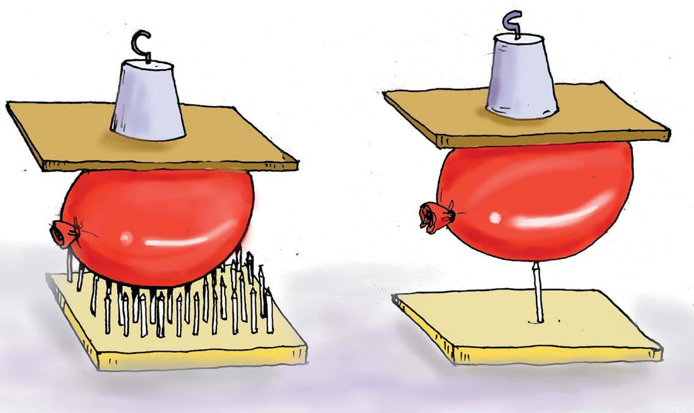
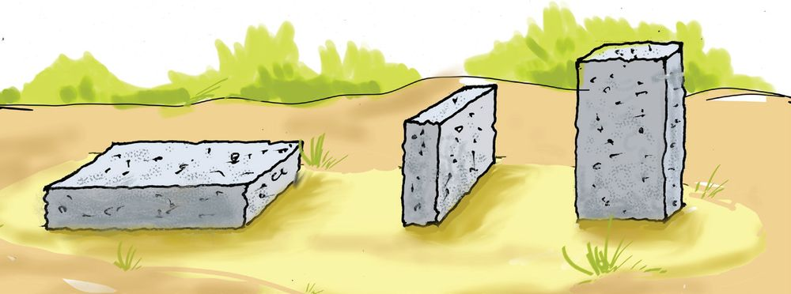
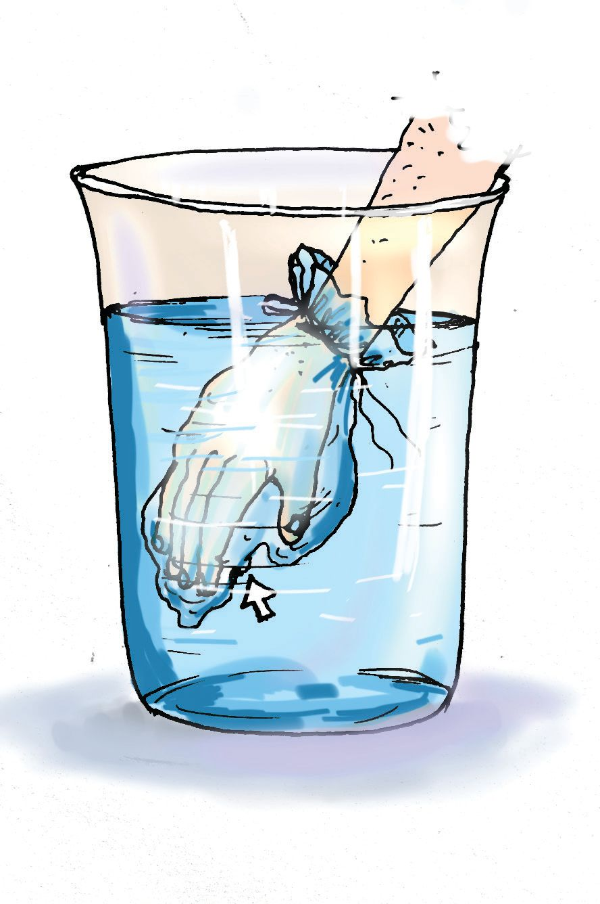
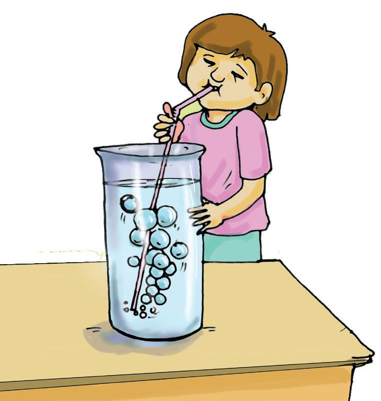
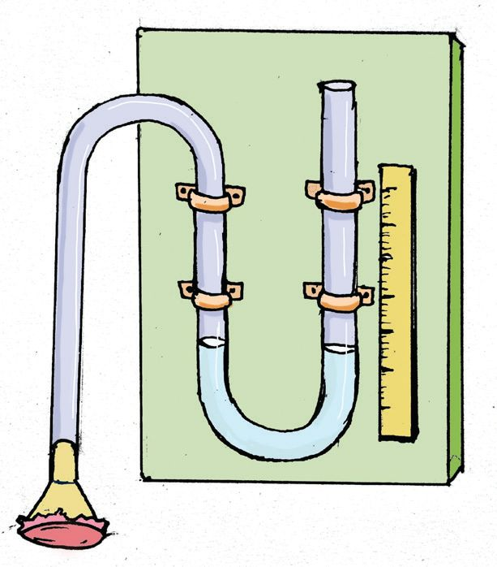
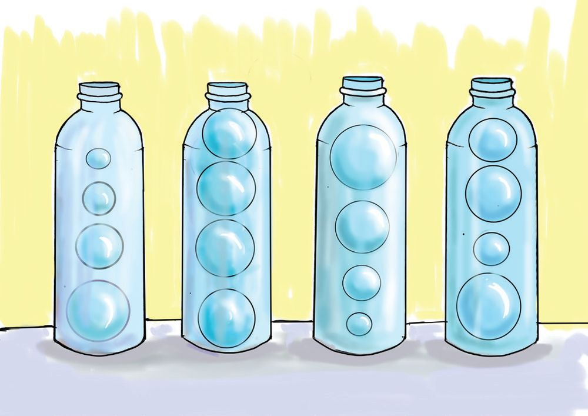

3
അവിടെ റോോഡിൽ
ചളി നിറഞ്ഞിട്ടുണ്ട്.
വണ്ടി താഴ്ന്നു
പോോകും.
3
മർദം
ഒരു പലക
ഇട്ടാൽ വണ്ടി
താഴ്ന്നു
പോോകില്ല.
ചിത്രം 3.1
എന്തായിരിക്കും ഡ്രൈവർ ഇങ്ങനെ പറഞ്ഞതിന്റെ കാരണം?
വിവിധ തരം ബലങ്ങളെക്കുറിച്ച് നാം പഠിച്ചതാണല്ലോോ? ഭൂമി എല്ലാ വസ്തുക്കളിലും
ഒരു ആകർഷണ ബലം പ്രയോോഗിക്കുന്നുണ്ട്. അതാണല്ലോോ വസ്തുവിന്റെ ഭാരം.
ഒരേ ഭാരം വ്യയത്യയസ്തരീതിയിൽ പ്രയോോഗിക്കപ്പെടുന്നതിന്റെ ചിത്രങ്ങള് നോോക്കൂ.
ചിത്രം 3.2
Page 38

Figure fig_ch02_p038_01 (Page 38)
അടിസ്ഥാനശാസ്ത്രം - VIII
ഒരു ഇഷ്ടിക സ്പോോഞ്ചില് ലംബമായും തിരശ്ചീനമായും വച്ചിരി
ക്കുന്നു. രണ്ടു സന്ദർഭങ്ങളിലും അതിന്റെ ഭാരത്തിന് മാറ്റം വരുന്നി
ല്ലല്ലോോ? എന്നാൽ സ്പോോഞ്ച് താഴ്ന്നത് ഒരുപോോലെയാണോോ?
മെത്തയില് നിൽക്കുമ്പോോഴുംം കിടക്കുമ്പോോഴുംം കുട്ടിയുടെ ഭാരത്തില്
മാറ്റം വരില്ല. എങ്കിലും നില്ക്കുമ്പോോഴല്ലേ മെത്ത കൂടുതല്
താഴുന്നത്. എന്തായിരിക്കും ഇതിനു കാരണം? ഒരു പ്രവർത്തനം
ചെയ്തുനോോക്കാം.
ചിത്രം 3.3
കാർഡ്ബോോർഡിൽ ഒരു മൊൊട്ടുസൂചി തറച്ച് ചിത്രത്തിലേതു
പോോലെ ഒരു ബലൂൺ അതിനു മുകളിൽ വയ്ക്കുക. ചെറിയൊൊരു
ഭാരം ബലൂണിനു മുകളിൽ വച്ച് നോോക്കൂ. ബലൂൺ പൊൊട്ടി
പോോകുന്നില്ലേ? മൊൊട്ടുസൂചികൾ വളരെ അടുത്ത് തറയ്ക്കുക.
ഇതേ ഭാരം ബലൂണിനു മുകളിൽ വയ്ക്കൂ. മുകളിലെ പ്രവർ
ത്തനങ്ങളുടെ നിരീക്ഷണഫലം തന്നിരിക്കുന്ന പട്ടികയിൽ
എഴുതൂ.
സമ്പർക്കത്തിൽ വരുന്ന
പ്രതല പരപ്പളവ്
(കൂടുതൽ/കുറവ്)
സന്ദർഭം
സ്പോോഞ്ചിൽ ഇഷ്ടിക ലംബമായി വയ്ക്കുമ്പോോൾ
വയ്ക്കുന്നു
തിരശ്ചീനമായി വയ്ക്കുമ്പോോൾ
കുട്ടി മെത്തയിൽ
നിൽക്കുമ്പോോൾ
കിടക്കുമ്പോോൾ
ആണിയുടെ
ഒരു ആണി ഉപയോോഗിച്ചപ്പോോൾ
മുകളിൽ ബലൂൺ
കൂടുതൽ ആണികൾ
വയ്ക്കുന്നു
ഉപയോോഗിച്ചപ്പോോൾ
പട്ടിക 3.1
38
പട്ടിക വിശകലനം ചെയ്യൂ. ഒരേ ബലം അനുഭവപ്പെടുന്ന സന്ദർഭ
ങ്ങളിൽ തന്നെ പ്രതല പരപ്പളവ് മാറുമ്പോോൾ വ്യയത്യയസ്ത ഫലങ്ങൾ
കിട്ടുന്നുണ്ടല്ലോോ. മർദത്തിലുള്ള വ്യയത്യാസമാണ് ഇതിനു കാരണമാ
കുന്നത്. എന്താണ് മർദം?
യൂണിറ്റ് പരപ്പളവിൽ ലംബമായി അനുഭവപ്പെടുന്ന ബലമാണ് മർദം.
ഇതുവരെ ഓടിയതിൽ
ജയിച്ചത് ഞാനാണ്.
ഇനിയും ഞാൻ തന്നെ
ജയിക്കും.
മത്സരത്തിൽ ആര് ജയിക്കും? നിങ്ങളുടെ അഭിപ്രായം
രേഖപ്പെടുത്തൂ. കാരണം എന്തായിരിക്കും?
മർദം അളക്കാം
രണ്ടു കോോൺക്രീറ്റ് സ്ലാബുകൾ മണലിൽ വച്ചിരിക്കുന്ന ചിത്രം
ശ്രദ്ധിക്കൂ.
ഇവയോോരോോന്നും 18 N ഭാരമുള്ള കോോൺക്രീറ്റ് ക്യൂബുകൾ ചേർത്തു
വച്ച് നിർമ്മിച്ചതായി സങ്കല്പിക്കുക. ക്യൂബിന്റെ ഒരു വശത്തിന്റെ
പരപ്പളവ് 0.36 m2 ആണെന്നും സങ്കൽപ്പിക്കുക.
ചിത്രം അടിസ്ഥാനമാക്കി പട്ടിക പൂർത്തിയാക്കൂ.
(1)
0.36 m2
18 N
ചിത്രം 3.6
(2)
ചിത്രം 3.5
39
Page 40

Figure fig_ch02_p040_01 (Page 40)
അടിസ്ഥാനശാസ്ത്രം - VIII
അളവുകൾ
സ്ലാബ് 1
സ്ലാബ് 2
മണലിൽ അനുഭവപ്പെടുന്ന ബലം
സമ്പർക്കത്തിൽ വരുന്ന പ്രതലപരപ്പളവ്
യൂണിറ്റ് പരപ്പളവിൽ അനുഭവപ്പെടുന്ന ബലം
പട്ടിക 3.2
സ്ലാബിന്റെ ഭാരമാണല്ലോോ മണലിൽ ലംബമായി അനുഭവപ്പെടു
ന്നത്. ഇതിനെ വ്യാപകമർദം എന്ന് പറയുന്നു.
ഒരു പ്രതലത്തില് ലംബമായി അനുഭവപ്പെടുന്ന ബലത്തെ
വ്യാാപക മര്ദം എന്നു പറയുന്നു.
യൂണിറ്റ് പരപ്പളവിൽ അനുഭവപ്പെടുന്ന ബലവും നാം കണ്ടെ
ത്തിയല്ലോോ. ഇതാണ് മർദം. മർദത്തിന് ഒരു സമവാക്യം എഴുതി
നോോക്കാം.
മർദത്തെ P എന്നും വ്യാപകമർദത്തെ F എന്നും പരപ്പളവിനെ
F
A എന്നും സൂചിപ്പിച്ചാൽ,
P=
A
വ്യാപക മർദം
മർദം = പരപ്പളവ്
മർദത്തിന്റെ യൂണിറ്റ് എന്തായിരിക്കും?
മർദത്തിന്റെ യൂണിറ്റ് = വ്യാപക മർദത്തിന്റെ യൂണിറ്റ്
പരപ്പളവിന്റെ യൂണിറ്റ്
മര്ദത്തിന്റെ SI യൂണിറ്റാണ് പാസ്കല്
1 പാസ്കല് = 1 N/m2
എങ്കിൽ മുകളിലെ സ്ലാബുകൾ മണലിൽ പ്രയോോഗിക്കുന്ന മർദം
കണ്ടെത്തൂ.
• സ്ലാബ് 1 പ്രയോോഗിക്കുന്ന മർദം = --------------------------------• സ്ലാബ് 2 പ്രയോോഗിക്കുന്ന മർദം = ---------------------------------
മറ്റൊൊരു സന്ദർഭം വിശകലനം ചെയ്യാം.
ഒരു കോോണ്ക്രീറ്റ് കട്ട മണലില് ചിത്രത്തിലുള്ളതുപോോലെ മൂന്നു
വ്യയത്യയസ്ത രീതിയില് വച്ചിരിക്കുന്നു.
ഏതുരീതിയില് വയ്ക്കുമ്പോോഴായിരിക്കും കോോൺക്രീറ്റ് കട്ട മണലി
ലേക്ക് കൂടുതൽ താഴുന്നത്? എന്തുകൊൊണ്ട്?
വ്യാാപകമർദം സ്ഥിരമായിരിക്കുന്ന സന്ദർഭങ്ങളിൽ മർദം പ്രതല
പരപ്പളവിന് വിപരീത അനുപാതത്തിലായിരിക്കും. അതായത്
പ്രതലപരപ്പളവ് കൂടുമ്പോോൾ മർദം കുറയുകയും പ്രതല പരപ്പളവ്
കുറയുമ്പോോൾ മർദം കൂടുകയും ചെയ്യും.
പലകയിട്ടാൽ വണ്ടി ചളിയിൽ താഴ്ന്നുപോോകില്ല എന്ന് ഡ്രൈവർ
പറഞ്ഞതിന്റെ കാരണം ഇപ്പോോൾ മനസ്സിലായില്ലേ.
നിങ്ങളുടെ സ്കൂൾ ബാഗ് ഒരു നേർത്ത ചരടിൽ കെട്ടി ഉയർത്താൻ
ശ്രമിക്കുക. എന്ത് അനുഭവപ്പെടുന്നു? ചരടിനു പകരം ചിത്രത്തി
ലേതുപോോലെ വീതികൂടിയ നാട ഉപയോോഗിച്ച് ഉയർത്തിയാലോോ?
അനുഭവപ്പെട്ട വ്യയത്യാസത്തിന്റെ കാരണം പരപ്പളവും മർദവുമായി
ബന്ധപ്പെടുത്തി വിശദീകരിക്കാമോോ?
ഇതുപോോലെ, ചിത്രത്തിൽ തന്നിട്ടുള്ള ഉദാഹരണങ്ങൾക്ക് കാരണം
കണ്ടെത്തൂ. കൂടുതൽ സന്ദർഭങ്ങളുംം കാരണങ്ങളുംം എഴുതിച്ചേർക്കൂ.
ചിത്രം 3.8
ചിത്രം 3.9
• കത്തിയുടെ വായ്ത്തല കനംകുറച്ചു നിർമ്മിക്കുന്നു.
• മണ്ണുമാന്തി യന്ത്രങ്ങളുടെ ചക്രങ്ങൾ വീതി കൂടിയ ചങ്ങലകൾ
കൊൊണ്ട് ബന്ധിപ്പിച്ചിരിക്കുന്നു.
•
•
41
Page 42
Figure fig_ch02_p042_01 (Page 42)

Figure fig_ch02_p042_02 (Page 42)
അടിസ്ഥാനശാസ്ത്രം - VIII
ദ്രാവകമർദം
ഖരപദാർഥങ്ങൾ മാത്രമാണോോ മർദം പ്രയോോഗിക്കുന്നത്. ദ്രാവ
ങ്ങളുംം വാതകങ്ങളുംം മർദം പ്രയോോഗിക്കുന്നില്ലേ ?
താഴെ തന്നിരിക്കുന്ന പ്രവർത്തനം ചെയ്തുനോോക്കൂ.
ഒരു പോോളിത്തീൻ കവർ ചിത്രത്തിലേതുപോോലെ കയ്യിൽ മുറുക്കി
കെട്ടുക. കൈ ഒരു ബക്കറ്റിലെ ജലത്തിലേക്ക് താഴ്ത്തുക. കവർ
കയ്യിൽ ഒട്ടിപ്പിടിക്കുന്നില്ലേ? ഇവിടെ പോോളിത്തീൻ കവറിനെ അമർ
ത്തിയത് ജലം പ്രയോോഗിച്ച മർദമല്ലേ?
ഖരവസ്തുക്കളെ പോോലെ ദ്രാവകങ്ങൾക്കും മർദം പ്രയോോഗിക്കാൻ
കഴിയുമെന്ന് മനസ്സിലായില്ലേ. ദ്രാവകങ്ങൾ അത് സ്ഥിതിചെയ്യുന്ന
പാത്രത്തിന്റെ എല്ലാ വശങ്ങളിലേക്കും മര്ദം പ്രയോോഗിക്കുന്നുണ്ട്.
ഒരു ദ്രാവകം ലംബമായി പ്രയോോഗിക്കുന്ന ബലമാണ്
അതിന്റെ വ്യാാപക മർദം. ദ്രാവകം യൂണിറ്റ് പരപ്പളവിൽ
പ്രയോോഗിക്കുന്ന വ്യാാപക മർദമാണ് ദ്രാവകമർദം.
ചിത്രം 3.10
ദ്രാവകമർദം എന്തെല്ലാം ഘടകങ്ങളെ ആശ്രയിക്കുന്നു?
താഴെ തന്നിരിക്കുന്ന പ്രവർത്തനം ചെയ്തുനോോക്കാം.
ഒരു പ്ലാസ്റ്റിക് കുപ്പിയിൽ താഴെ ഒരു സുഷിരമുണ്ടാക്കൂ.
സുഷിരം അടച്ചുപിടിച്ച് കുപ്പിയിൽ ജലം നിറയ്ക്കുക.
സുഷിരം തുറന്നുവിട്ട് പുറത്തേക്ക് ചീറ്റുന്ന ജലപ്രവാഹം
നിരീക്ഷിക്കൂ.
വ്യയത്യയസ്ത ആകൃതിയിലും വലുപ്പത്തിലുമുള്ള കുപ്പികള്
ഉപയോോഗിച്ച് പരീക്ഷണം ആവര്ത്തിക്കുക.
• പുറത്തേക്ക് ചീറ്റുന്ന ജലപ്രവാഹത്തിന്റെ ശക്തി കൂടുത
ലെങ്കിൽ മർദവും കൂടുതലായിരിക്കില്ലേ?
ചിത്രം 3.11
• ജലനിരപ്പ് താഴുമ്പോോൾ
മാറ്റമുണ്ടാകുന്നു?
ജലപ്രവാഹത്തിന്
എന്ത്
ദ്രാവകത്തിന്റെ ആഴം കൂടുംംതോോറുംം മർദം കൂടുന്നു.
ഇതിൽനിന്നും എന്ത് അനുമാനിക്കാം?
ദ്രാവകമർദം മറ്റ് ഏതെല്ലാം ഘടകങ്ങളെ ആശ്രയിക്കുന്നു?
42
Page 43
Figure fig_ch02_p043_01 (Page 43)
അടിസ്ഥാനശാസ്ത്രം - VIII
ചിത്രത്തിലേതുപോോലെ ഒരു സിറിഞ്ച് പലകമേല്
ഉറപ്പിക്കുക. ഒരു ഐ.വി. സെറ്റ് ട്യൂൂബിന്റെ അഗ്രം
സിറിഞ്ചിന്റെ അറ്റത്ത് ഘടിപ്പിക്കുക. സിറിഞ്ചിന്റെ
പിസ്റ്റൺ തൊൊട്ടുകൊൊണ്ട് ഒരു ബോോള് പേനയുടെ
കൂടിന്റെ താഴ്ഭാഗം ഉറപ്പിക്കുക. പിസ്റ്റണ് ചലിക്കു
മ്പോോൾ പേനയുടെ കൂട് തിരിയുന്ന വിധം ക്രമീക
രിക്കുക. ഇനി പേനയുടെ കൂടിന്റെ മുകൾഭാഗത്ത്
ഒരു ഈര്ക്കില് ഉറപ്പിക്കുക. ഐ.വി. സെറ്റിന്റെ
മറ്റേ അഗ്രം പ്ലാസ്റ്റിക് ബോോട്ടിലില് ഘടിപ്പിക്കുക.
പ്ലാസ്റ്റിക് ബോോട്ടിലില് ജലം നിറച്ച് സിറിഞ്ചിനെ
ക്കാൾ ഉയരത്തില് വയ്ക്കുക.
ബോോട്ടില് മുകളിലേക്ക് ഉയർത്തുക. ജലത്തിന്റെ മർദ
മനുസരിച്ച് പിസ്റ്റൺ പ്രയോോഗിക്കുന്ന ബലത്തിൽ മാറ്റ
മുണ്ടാകുമല്ലോോ. പിസ്റ്റൺ പ്രയോോഗിക്കുന്ന ബലത്തി
നനുസരിച്ച് ഈർക്കില് തിരിയുന്നില്ലേ?
പ്ലാസ്റ്റിക് ബോോട്ടില്
ഈർക്കിൽ
പേനയുടെ
കൂട്
സിറിഞ്ച്
ചിത്രം 3.12
• ബോോട്ടില് കൂടുതൽ ഉയർത്തുക. എന്ത് നിരീക്ഷിക്കുന്നു?
കാരണമെന്ത് ?
• ജലത്തിനു പകരം ഉപ്പ് ലായനി ഉപയോോഗിച്ച് പരീക്ഷണം
ആവർത്തിക്കുക.
ഈർക്കിൽ കൂടുതൽ തിരിയുന്നതിന് കാരണമെന്താണ് ?
വ്യയത്യയസ്ത സാന്ദ്രതയുള്ള ദ്രാവകങ്ങളാണ് ജലവും ഉപ്പുലായനിയും.
ഉപ്പുലായനിക്ക് ജലത്തിനേക്കാള് സാന്ദ്രതയുണ്ട്. അതാണ് പിസ്റ്റ
ണ് കൂടുതല് ചലിക്കാനും ഈർക്കിൽ കൂടുതൽ തിരിയാനും കാ
രണമായത്.
ദ്രാവകത്തിന്റെ സാന്ദ്രത അത് പ്രയോോഗിക്കുന്ന മർദത്തെ
സ്വാധീനിക്കുന്നുണ്ട്. ദ്രാവകത്തിന്റെ സാന്ദ്രത വർധിക്കുമ്പോോൾ
മർദവും വർധിക്കും.
ദ്രാവകമര്ദത്തെ സ്വാധീനിക്കുന്ന ഘടകങ്ങളെ നമ്മള് ചെയ്ത
പരീക്ഷണങ്ങളുടെ അനുഭവത്തില് ലിസ്റ്റ് ചെയ്താലോോ?
• ദ്രാവകയൂപത്തിന്റെ ഉയരം (h)
• ദ്രാവകത്തിന്റെ സാന്ദ്രത (d)
ദ്രാവകമര്ദം
മര്ദമാപിനി.
അളക്കാന്
ഉപയോോഗിക്കുന്ന
ഉപകരണമാണ്
നമുക്കൊൊരു മര്ദമാപിനി നിര്മ്മിച്ചാലോോ?
43
Page 44

Figure fig_ch02_p044_01 (Page 44)

Figure fig_ch02_p044_02 (Page 44)
അടിസ്ഥാനശാസ്ത്രം - VIII
മര്ദമാപിനി
പ്ലാസ്റ്റിക് ട്യൂൂബ് 'U’ ആകൃതിയില് പലകയില് ഉറപ്പിക്കുക. അതില്
ജലം നിറയ്ക്കുക. ട്യൂൂബിന്റെ സ്വവതന്ത്രമായ അഗ്രത്തില് ഒരു ഫണല്
ചിത്രത്തിലേതുപോോലെ ബന്ധിപ്പിക്കുക. ഫണലിന്റെ വിസ്തൃതമായ
ഭാഗത്ത് ബലൂണ് ഉപയോോഗിച്ച് ഒരു ഡയഫ്രം ഉണ്ടാക്കുക. പലകയി
ല് സ്കെയില് ഉറപ്പിക്കുക. മർദമാപിനി തയ്യാറായി.
ഫണലിലെ ബലൂണിൽ വിരൽ കൊൊണ്ട് അമർത്തി മർദം പ്രയോോഗിക്കൂ.
ട്യൂൂബിലെ ജലനിരപ്പുകൾ തമ്മിൽ വ്യയത്യാസം കാണുന്നില്ലേ?
കൂടുതൽ മർദം പ്രയോോഗിക്കൂ. ജലനിരപ്പുകൾ തമ്മിൽ വ്യയത്യാസം
കൂടുന്നത് കാണാം.
ചിത്രം 3.13
ഇനി ഒരു ബീക്കറിൽ വ്യയത്യയസ്ത ദ്രാവകങ്ങളെടുത്ത് മർദമാപിനി ഉപ
യോോഗിച്ച് മർദം അളന്ന് പട്ടികയിൽ ചേർക്കൂ.
ട്യൂൂബിലെ ജലനിരപ്പിലെ വ്യയത്യാസം / മർദം
ഫണലിന്റെ സ്ഥാനം
ജലത്തിൽ
ഉപ്പ്
വെള്ളത്തിൽ
മണ്ണെണ്ണയിൽ
ഉപരിതലത്തിൽ
ബീക്കറിന്റെ പകുതി
താഴ്ചയിൽ
ബീക്കറിന്റെ അടിത്തട്ടില്
പട്ടിക 3.3
പട്ടിക വിശകലനം ചെയ്യൂ.
• എവിടെയാണ് മർദം കൂടുതൽ അനുഭവപ്പെട്ടത്?
• ഏതു ദ്രാവകത്തിലാണ് മർദം കൂടുതൽ അനുഭവപ്പെട്ടത്?
മറ്റൊൊരു പ്രവർത്തനം ചെയ്തു നോോക്കാം. ആഴം കൂടിയ ഒരു പാത്രത്തില്
ജലമെടുക്കുക. ഒരു സ്ട്രോോ ജലത്തിലേക്ക് താഴ്ത്തി സാവധാനം
ഊതി നോോക്കൂ. മുകളിലേക്ക് വായുകുമിളകള് വരുന്നില്ലേ?
• മുകളിലെത്തുമ്പോോൾ ഇവയുടെ വലുപ്പത്തിനെന്തു മാറ്റമാണു
ണ്ടാകുന്നത്?
ചിത്രം 3.14
• ഈ വലുപ്പവ്യയത്യാസത്തിനുള്ള കാരണം എഴുതൂ.
അണക്കെട്ടുകള് നിര്മ്മിക്കുമ്പോോള് അടിഭാഗം കൂടുതല് വിസ്തൃതി
യില് പണിയാനുള്ള കാരണം എന്താണ്? ദ്രാവകമര്ദം നിത്യയജി
വിതത്തില് അനുഭവപ്പെടുന്ന കൂടുതല് സന്ദര്ഭങ്ങള് കണ്ടെത്തി
എഴുതൂ.
വാതകമര്ദം
ഖരപദാർഥങ്ങൾക്കും ദ്രാവകങ്ങൾക്കും എന്നതു
പോോലെ വാതകങ്ങൾക്കും മർദം പ്രയോോഗിക്കാനുള്ള
കഴിവുണ്ട്.
വാഹനങ്ങളുടെ ടയറിൽ മർദമളന്നാണല്ലോോ വായു
നിറയ്ക്കുന്നത്.
വാതകത്തിന്റെ കണികകൾ ഒരു പ്രതലത്തിൽ
യൂണിറ്റ് പരപ്പളവിൽ ചെലുത്തുന്ന ബലമാണ്
വാതകമർദം. ഇത് വാതക കണികകളുടെ കൂട്ടിമുട്ടലു
കളുടെ ഫലമാണ്.
ചിത്രം 3.15
യൂണിറ്റ് പരപ്പളവില് ഒരു വാതകം ലംബമായി പ്രയോോഗിക്കുന്ന
ബലമാണ് വാതകമര്ദം.
വാതകമർദത്തെ സ്വാധീനിക്കുന്ന ഘടകങ്ങൾ എന്തെല്ലാമാണ് ?
ഒരു ബലൂൺ നന്നായി ഊതി വീർപ്പിക്കുക. ബലൂണിലേക്കു വീണ്ടും
വായു നിറച്ചാൽ എന്തു സംഭവിക്കും? പൊൊട്ടിപ്പോോകുമല്ലോോ? വായു
വിന്റെ മർദം താങ്ങാൻ കഴിയാതെ വരുന്നതുകൊൊണ്ടാണ് ബലൂൺ
പൊൊട്ടുന്നത്. കൂടുതൽ വായു നിറയ്ക്കുമ്പോോൾ വാതക കണികക
ളുടെ എണ്ണത്തിലുണ്ടാകുന്ന മാറ്റം ചിത്രത്തിൽ നോോക്കി കണ്ടെത്തൂ.
ഇതിൽ നിന്നും എന്ത് അനുമാനിക്കാം?
വാതകമർദം കണികകളുടെ എണ്ണത്തെ ആശ്രയിക്കുന്നുണ്ട്.
കണികകളുടെ എണ്ണം കൂടുമ്പോോൾ വാതകമർദം കൂടുന്നു.
ചിത്രം 3.16
വ്യയത്യയസ്ത വലുപ്പമുള്ള രണ്ടു ബലൂണുകളിൽ ഒരേ അളവ് വായു
നിറയ്ക്കുക. ഇപ്പോോൾ രണ്ടു ബലൂണിലെയും വാതക കണികകളുടെ
എണ്ണം തുല്യയമായിരിക്കുമല്ലോോ. ഏതു ബലൂണിലാണ് കൂടുതൽ
മർദം അനുഭവപ്പെടുന്നത്? എന്ത് അനുമാനിക്കാം?
വ്യാാപ്തം വാതകങ്ങളുടെ മർദത്തെ സ്വാധീനിക്കുന്നു.
ഊതിവീർപ്പിച്ച ഒരു ബലൂൺ വെയിലത്ത് വയ്ക്കുക? എന്ത് നിരീ
ക്ഷിക്കുന്നു? ബലൂണിലെ വായു ചൂടുപിടിക്കുമ്പോോൾ വായുമർദ
ത്തിന് എന്ത് മാറ്റമുണ്ടായി?
താപനില വാതകങ്ങളുടെ മർദത്തെ സ്വാധീനിക്കുന്നു.
പ്രഷർകുക്കറിൽ പാചകം ചെയ്യുമ്പോോൾ താപനില കൂടുന്നതി
നനുസരിച്ച് കുക്കറിനുള്ളിലെ മർദം ഉയരുന്നുണ്ട്.
45
മുകളിലെ പ്രവർത്തനങ്ങളിൽ നിന്നും വാതകമർദത്തെ സ്വാധീനി
ക്കുന്ന ഘടകങ്ങളെ ലിസ്റ്റ് ചെയ്യൂ.
• കണികകളുടെ എണ്ണം
•
•
അന്തരീക്ഷമര്ദം
ഭൂമിക്കു ചുറ്റുമുള്ള വായുവിന്റെ ഒരു ആവരണമാണ്
അന്തരീക്ഷം. മുകളിലേക്ക് പോോകും തോോറുംം വായുവി
ന്റെ അളവ് കുറഞ്ഞു വരുന്നു. അന്തരീക്ഷവായുവിന്
മർദം പ്രയോോഗിക്കുവാൻ കഴിയുമോോ?
താഴേ തന്നിരിക്കുന്ന പ്രവര്ത്തനം ചെയ്തുനോോക്കൂ.
ചിത്രം 3.17
ഒരു സ്കെയില് മേശയുടെ മുകളില് വയ്ക്കുക. ചെറിയ ഉയ
രത്തില് നിന്നും ഒരു ഐസ്ക്രീം ബോോള് സ്കെയിലിലേക്ക്
ഇടുക.
സ്കെയില്
വീഴുന്നില്ലേ?
സ്കെയിലിനു
മുകളില് A4 വലിപ്പമുള്ള ഒരു പേപ്പര് വയ്ക്കുക.
ബോോള് ഇതേ ഉയരത്തിൽനിന്നും താഴെയ്ക്കിടൂ.
സ്കെയില് വീഴാതിരിക്കാന് കാരണമെന്താണ്? പേപ്പ
റിനു മുകളിലുള്ള വായുവിന്റെ ഭാരമാണ് ഇതിനു
കാരണം. വായുവിന്റെ മർദമാണ് സ്കെയിലിനെ
താങ്ങിനിർത്തുന്നത്.
അന്തരീക്ഷവായു വസ്തുക്കളിൽ മർദം പ്രയോോഗിക്കുന്നുണ്ട്.
ചിത്രം 3.18
മേൽ ചെയ്ത പ്രവർത്തനത്തിൽ നിന്നും അന്തരീക്ഷമർദത്തിന്റെ
സ്വാധീനം മനസ്സിലാക്കിയല്ലോോ. എന്താണ് അന്തരീക്ഷമർദം?
ഭൂമിയുടെ ഉപരിതലത്തില് യൂണിറ്റ് പരപ്പളവില് അനുഭവപ്പെടുന്ന
വായുയൂപത്തിന്റെ ഭാരമാണ് അന്തരീക്ഷമര്ദം.
അന്തരീക്ഷമര്ദത്തിന്റെ യൂണിറ്റ് ബാര് (bar) ആണ്.
അന്തരീക്ഷമർദം ഭൂമിയിൽ എല്ലായിടത്തും ഒരുപോോലെയാകുമോോ?
ചിത്രം നിരീക്ഷിക്കുക. ഏറ്റവും കൂടുതൽ മർദം അനുഭവപ്പെടു
ന്നത് ഏതു പുസ്തകത്തിലായിരിക്കും? കാരണമെന്താണ്?
ഇതുപോോലെ യൂണിറ്റ് പരപ്പളവിൽ അനുഭവപ്പെടുന്ന വായുയൂപ
ത്തിന്റെ ഭാരമാണല്ലോോ അന്തരീക്ഷമര്ദം. എങ്കിൽ ഉയരം കൂടുന്ന
തിനനുസരിച്ച് അന്തരീക്ഷമർദത്തിൽ എന്ത് മാറ്റമുണ്ടാകും? നിങ്ങ
ളുടെ നിഗമനങ്ങൾ കുറിക്കൂ.
ചിത്രം 3.19
46
ഭൂമിയുടെ ഉപരിതലത്തില് നിന്നും മുകളിലേക്ക് പോോകുന്തോോറുംം
അന്തരീക്ഷമര്ദം കുറഞ്ഞുവരുന്നു.
സമുദ്രനിരപ്പിലെ അന്തരീക്ഷമർദം പ്രമാണ അന്തരീക്ഷമ
ര്ദം (Standard Atmospheric Pressure) എന്നറിയപ്പെടുന്നു. ഇത്
1atm അഥവാ 0.76 m ഉയരവും യൂണിറ്റ് പരപ്പളവുമുള്ള രസ
യൂപത്തിന്റെ ഭാരത്തിന് തുല്യയമായിരിക്കും. അന്തരീക്ഷമര്ദം
അളക്കാന് ഉപയോോഗിക്കുന്ന ഉപകരണം ബാരോോമീറ്റര് ആണ്.
അന്തരീക്ഷമർദം
ക്കറിയാമോോ?
എത്രത്തോോളം
ശക്തമാണെന്ന്
നിങ്ങൾ
ഒരു അലുമിനിയം ക്യാൻ എടുത്ത് അതിൽ ചൂടുവെള്ളം
നിറച്ച് ഒഴിച്ച് കളയുക. ക്യാൻ അടച്ചശേഷം തണുത്തവെള്ള
ത്തിലേക്ക് പെട്ടെന്ന് താഴ്ത്തുക. എന്ത് നിരീക്ഷിക്കുന്നു?
ക്യാൻ തണുക്കുമ്പോോൾ അതിനുള്ളിലെ മർദം കുറയുകയും
പുറമെയുള്ള അന്തരീക്ഷമർദത്താൽ അത് ഞെരുക്കപ്പെടുകയും
ചെയ്യുന്നു.
ചിത്രം 3.20
• 1 m2 പരപ്പളവുള്ള ഒരു മേശയുടെ ഉപരിതലത്തിൽ അന്ത
രീക്ഷമർദം പ്രയോോഗിക്കുന്ന ബലം എത്രയുണ്ടാകും? കണ
ക്കാക്കി നോോക്കിയാലോോ? അന്തരീക്ഷമർദം 101325 പാസ്കൽ
ആണ്.
ബലം = മർദം × പരപ്പളവ്
=
1 Pa × 1 m2
=
ചിത്രം 3.21
101325 N
ഇത് ഏകദേശം 10339 kg മാസുള്ള ഒരു വസ്തുവിന്റെ ഭാരത്തിനു
തുല്യയമാണ്. ഇത്രയും വലിയ ബലം അനുഭവപ്പെട്ടിട്ടുംം മേശ
നിലംപതിക്കാത്തത് എന്തുകൊൊണ്ടായിരിക്കും?
വലിയോോ വലി
1654-ൽ ഓട്ടോോഫോോൺ ഗെറിക്ക രണ്ട് ചെമ്പ്
പാത്രങ്ങൾ (മാഗ്ഡെബർഗ് അർദ്ധ ഗോോള
ങ്ങൾ) ചേർത്ത് 35.5 സെൻ്റീമീറ്റർ വ്യാസ
മുള്ള ഒരു പൊൊള്ളയായ ഗോോളം ഉണ്ടാക്കി.
ഗോോളത്തിൽ നിന്ന് വായു നീക്കം ചെയ്തതിനു
ശേഷം, പാത്രങ്ങളെ വേർപെടുത്താൻ രണ്ടു
വശത്തു നിന്നും ബലംപ്രയോോഗിച്ച കുതിരകൾ
ക്ക് കഴിഞ്ഞില്ല. വായുമർദം ചെലുത്തുന്ന അതി
ശക്തമായ ബലം അങ്ങനെ ആദ്യംം പ്രകടമായി.
ദ്രാവകങ്ങളിലേതുപോോലെ വാതകങ്ങളിലും മർദം
എല്ലാ ദിശകളിലേക്കും അനുഭവപ്പെടുന്നു.
മറ്റൊൊരു പരീക്ഷണം ചെയ്യാം. ഒരു ഗ്ലാസിൽ ജലം നിറച്ച ശേഷം
കാർഡ് ബോോർഡുകൊൊണ്ട് അടയ്ക്കുക. കൈകൊൊണ്ട് കാർഡ്
ബോാർഡ് അമർത്തിപ്പിടിച്ച് ഇതിനെ തലകീഴായി കമഴ്ത്തിയ
ശേഷം കൈ സാവധാനം മാറ്റുക. ജലം താഴേക്കു
വീഴുന്നുണ്ടോോ? ഗ്ലാസിലെ ജലത്തിന്റെ ഭാരം മുഴുവൻ ബാലൻസ്
ചെയ്യാൻ അന്തരീക്ഷമർദം മൂലമുള്ള ബലത്തിനു സാധിക്കു
ന്നുണ്ടല്ലോോ.
വാതകങ്ങളുംം ദ്രാവകങ്ങളുംം തമ്മിലുള്ള മർദം പരസ്പരം തുല
നാവസ്ഥ പാലിക്കുന്നത് പ്രകൃതിയിലും നമ്മുടെ ദൈനംദിന
ജീവിതത്തിലും സംഭവിക്കുന്ന ഒരു സാധാരണ പ്രതിഭാസമാണ്.
ചിത്രം 3.23
മർദ സന്തുലനം
ഒരു പ്രവര്ത്തനം ചെയ്തുനോോക്കാം. പരന്ന പാത്രത്തിൽ ജലം എടു
ക്കുക. അതിൽ ഒരു മെഴുകുതിരി കത്തിച്ചുവയ്ക്കുക. മെഴുകുതിരി
ഗ്ലാസ്സ് കൊൊണ്ട് അടയ്ക്കൂ.
ചിത്രം 3.24
• മെഴുകുതിരി നാളത്തിനു എന്ത് സംഭവിക്കുന്നു?
• ഗ്ലാസ്സിനുള്ളിലെ വായുമർദത്തിന് എന്ത് മാറ്റമുണ്ടാകുന്നു?
• ഗ്ലാസ്സിനുള്ളിലെ ജലനിരപ്പിന് എന്ത് മാറ്റം കാണുന്നു?
ഗ്ലാസ്സിനുള്ളിലെ മർദവും ഗ്ലാസിനുപുറത്തെ അന്തരീക്ഷ
മർദവും തുല്യയമാകുന്നതുമൂലമാണ് ജലനിരപ്പ് താഴാതെ
നിലനിൽക്കുന്നത്.
ചിത്രം 3.25
48
ഒരു സിറിഞ്ചിന്റെ പിസ്റ്റൺ അല്പം പിന്നോോട്ട് വലിച്ചു
അതിന്റെ മുൻവശത്തെ ദ്വാാരം കൈകൊൊണ്ടു അമർത്തി
അടച്ചുപിടിക്കുക. തുടർന്ന് പിസ്റ്റൺ മുഴുവനായും
പിന്നോോട്ട് വലിച്ചുവിടുക. എന്ത് കാണുന്നു? പിസ്റ്റൺ
തിരികെപ്പോാകുന്നത് എന്തുകൊൊണ്ടാണ്? നിരീക്ഷണവും
കാരണവും ചര്ച്ച ചെയ്യൂ.
Page 49
Figure fig_ch02_p049_01 (Page 49)

Figure fig_ch02_p049_02 (Page 49)
അടിസ്ഥാനശാസ്ത്രം - VIII
താഴെ തന്നിരിക്കുന്ന സന്ദര്ഭങ്ങള് വായിച്ച് അതിനുള്ള കാരണ
ങ്ങള് അന്തരീക്ഷമര്ദത്തിന്റെ അടിസ്ഥാനത്തില് വിശദീകരിക്കുക.
• റബ്ബര് സക്കറുകള് മിനുസമുള്ള പ്രതലത്തില് പറ്റി പിടിക്കുന്നു.
• പര്വതാരോോഹകര്ക്ക് ഉയരങ്ങളിലെത്തുമ്പോോള് മൂക്കില് നിന്നും
രക്തസ്രാവം ഉണ്ടാകാറുണ്ട്.
• ഡ്രിപ്പ് ഇഞ്ചക്ഷന് നല്കുമ്പോോള് ഇഞ്ചക്ഷന് ബോോട്ടിലില് സൂചി
കൊൊണ്ട് തുളകള് ഇടുന്നു.
• ചുരം കയറുന്ന വാഹനങ്ങളില് ഇരിക്കുന്ന യാത്രക്കാര്ക്ക്
ചെവി വേദന അനുഭവപ്പെടുന്നു.
വിലയിരുത്താം
1.
കാരണം എഴുതുക.
• ചരക്ക് വാഹനങ്ങൾക്ക് ടയറുകളുടെ എണ്ണം കൂടുതലായി
രിക്കും.
• വിമാനം ഉയരത്തിലൂടെ പറക്കുമ്പോോൾ ചില യാത്രക്കാർക്ക്
മൂക്കിൽ നിന്നും രക്തസ്രാവം ഉണ്ടാകുന്നു.
• അക്വേേറിയത്തിൽ താഴെ നിന്നും വരുന്ന ജല കുമിളകളുടെ
വലുപ്പം കൂടിക്കൂടി വരുന്നു.
• കെട്ടിടങ്ങളുടെ തറ പണിയുമ്പോോൾ അടി ഭാഗം വീതി കൂട്ടി
നിർമ്മിക്കുന്നു.
2. ഒരു കുപ്പിയിൽ നിറച്ചിരിക്കുന്ന ജലത്തിന്റെ അടിയിൽ നിന്നും
കുമിളകൾ പൊൊങ്ങി വരുന്നത് ചിത്രീകരിച്ചിരിക്കുന്നു. ഇതിൽ
ശരിയായ ചിത്രം ഏത്? എന്തുകൊൊണ്ട്?
3. താഴെ തന്നിരിക്കുന്ന ചിത്രം നിരീക്ഷിക്കുക. ഇതിൽ ഓരോോ
ന്നിലും ഒരേ ദ്രാവകം നിറച്ചിരിക്കുന്നുവെങ്കിൽ അടിഭാഗത്ത്
അനുഭവപ്പെടുന്ന മർദത്തിൽ എന്ത് വ്യയത്യാസമാണ് ഉണ്ടായി
രിക്കുക? കാരണമെന്ത്?
4. തുറന്നുവച്ച പാത്രത്തിൽ പാചകം ചെയ്യുന്നതിനെക്കാൾ
വേഗത്തിൽ പ്രഷർകുക്കറിൽ പാചകം ചെയ്യാൻ സാധിക്കുന്നു.
ഇതിന്റെ പ്രവർത്തനതത്വം വിശദീകരിക്കുക.
തുടർപ്രവർത്തനങ്ങൾ
1.
‘മഴയും മർദവും’ എന്ന വിഷയത്തെക്കുറിച്ച് ഒരു പ്രോോജക്ട്
റിപ്പോോർട്ട് തയ്യാറാക്കുക.
2. ഒരു പ്ലാസ്റ്റിക് കുപ്പിയുടെ രണ്ടറ്റത്തും ഓരോോ പൈപ്പ് വായു
കടക്കാത്ത വിധം ഘടിപ്പിക്കുക. ഒരു പൈപ്പ് നീളം കൂടിയതും
മറ്റൊൊന്ന് നീളം കുറഞ്ഞതുമായിരിക്കണം. നീളം കൂടിയ
പൈപ്പിന്റെ അറ്റം വെള്ളം നിറച്ച ഒരു ബക്കറ്റ് ഉയരത്തില്
വച്ച് അതില് ഇടുക. നീളം കുറഞ്ഞ പൈപ്പ് മറ്റൊൊരു പാത്ര
ത്തില് വയ്ക്കുക. പ്ലാസ്റ്റിക് കുപ്പി രണ്ട് മൂന്നു തവണ അമര്ത്തി
വിടൂ. നിരീക്ഷണവും നിഗമനവും എഴുതുക.